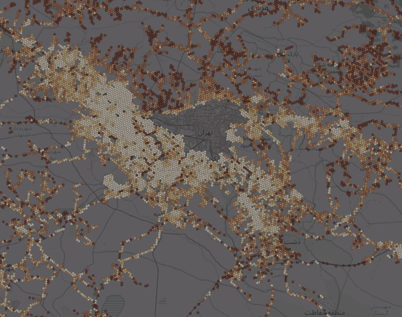

Spatial Disparity Index
As an output of research, informed by years of practice in the peripheries of Tehran, a central dilemma in dealing with uncertainty is the absence of consistent data sources that could support any analytical procedure in research or practice. Spatial Disparity Index is an experimental model, grounded in the theories and practices of Space Syntax and informed solely by open-source tools and data. It is an effort to predict the missing information and translate it into a composite index that approximates the potential quality of life in areas where uncertainty, informality, social decay, and precarious physical conditions may prevail. This experimental tool is aimed at planning and policymaking researchers and practitioners.
Explore Model →